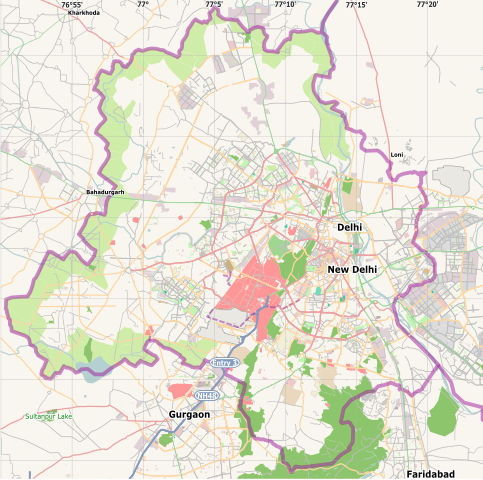

India Gate
The India Gate (originally the All India War Memorial) is a war memorial located astride the Rajpath, on the
eastern edge of the "ceremonial axis" of New Delhi, India. It stands as a memorial to 70,000 soldiers of the
British Indian Army who died in between 1914 and 1921 in the First World War, in France, Flanders, Mesopotamia,
Persia, East Africa, Gallipoli and elsewhere in the Near and the Far East, and the third Anglo-Afghan War.
 13,218 servicemen's names, including some soldiers and officers from the United Kingdom, are inscribed on the
gate.
Designed by Sir Edwin Lutyens, the gate evokes the architectural style of the triumphal arch such as the Arch of
Constantine, in Rome, and is often compared to the Arc de Triomphe in Paris, and the Gateway of India in Mumbai.
13,218 servicemen's names, including some soldiers and officers from the United Kingdom, are inscribed on the
gate.
Designed by Sir Edwin Lutyens, the gate evokes the architectural style of the triumphal arch such as the Arch of
Constantine, in Rome, and is often compared to the Arc de Triomphe in Paris, and the Gateway of India in Mumbai.
The foundation stone of India Gate was laid by His Royal Highness, the Duke of Connaught in 1921 and it was
designed by Edwin Lutyens. The monument was dedicated to the nation 10 years later by the then Viceroy, Lord
Irwin. Another memorial, Amar Jawan Jyoti was added much later, after India got its independence.
The eternal flame burns day and night under the arch to remind the nation of soldiers who laid down their lives
in the Indo-Pakistan War of December 1971.
Following the Bangladesh Liberation war in 1972, a structure consisting of a black marble plinth with a reversed
rifle, capped by a war helmet and bounded by four eternal flames, was built beneath the archway. This structure,
called Amar
Jawan Jyoti (Flame of the Immortal Soldier), has since 1971 served as India's tomb of the unknown soldier. India
Gate is counted amongst the largest war memorials in India and every Republic Day, the Prime Minister visits the
gate to pay
their tributes to the Amar Jawan Jyoti, following which the Republic Day parade starts. The memorial-gate is
also a popular spot for protests by the civil society in New Delhi.
The gate, which is illuminated every evening from 19:00 to 21:30, today serves as one of Delhi's most important
tourist attractions. Cars travelled through the gate earlier, until it was closed to traffic. The Republic Day
Parade starts
from Rashtrapati Bhavan and passes around the India Gate. India gate is also a popular spot for civil society
protests in New Delhi, with historical protests being against the Nirbhaya rape case, Unnao rape case, and the
anti-corruption
movement.
Timings

India gate is located Near Rajpath place and is close to Pragati Maidan.
The timings available to visit India Gate is Morning to Night with no entry fees. It is available to visit 7
days a week with no exception to any National Holidays.
There are no photography charges too.
During night, India Gate is dramatically floodlit while the fountains nearby make a lovely display with coloured
lights. Though people aren't allowed entry after it is dark.
Surrounding the structure is a large expanse of lush green lawns, which is a popular picnic spot.